Axel Samuel Häcker García
Programador y Diseñador de Videojuegos en Unity
✉ Email 🎮 itch.io¡Hola! Gracias por visitar mi portfolio
En 2015 me mudé a Alemania para formarme y trabajar en el sector Industrial. Tras 8 años, decidí dar el paso hacia lo que realmente me apasiona: el desarrollo de videojuegos. Para profesionalizarme, combiné mi trabajo con un bootcamp en Unity y posteriormente completé un Máster en Diseño y Programación de Videojuegos en EVAD.
Hoy me dedico en cuerpo y alma al desarrollo interactivo en Unity, aportando la disciplina, la capacidad de aprendizaje y la resolución de problemas adquiridas en mi trayectoria profesional.
Habilidades, Estudios e Idiomas
Habilidades
- Diseño de niveles
- Diseño y programación de IA
- Alta capacidad de adaptación a cambios de diseño
- Aprendizaje continuo e investigación proactiva
Estudios
- EVAD Escuela superior de Videojuego y Arte digital
- Boot Camp Unity 2024
- Máster en Diseño y Programación 2025-2026
Idiomas
- Español (Nativo)
- Alemán
- Inglés
Proyectos Destacados
The Rising of Necromancy
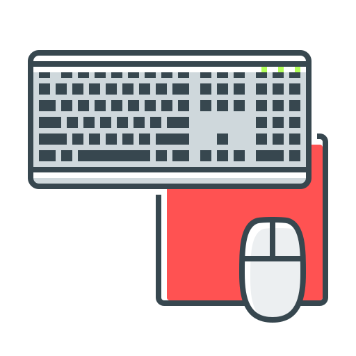
PCDiseño y Programación de Gameplay / IA
📸 Capturas
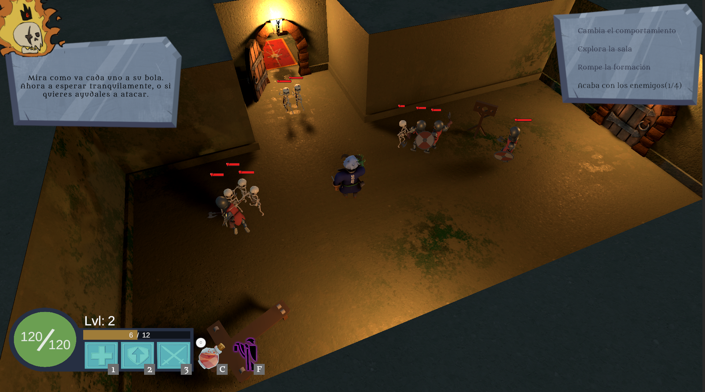
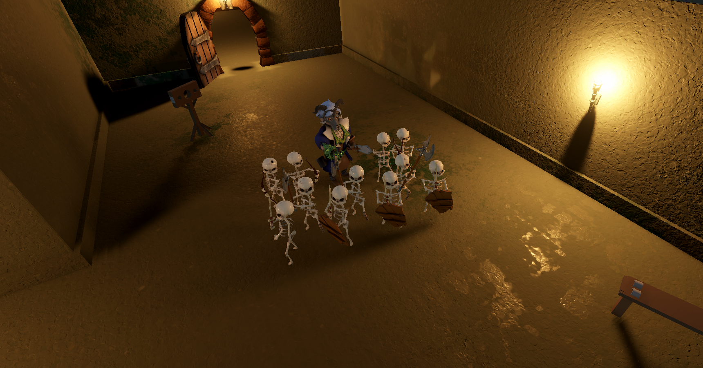
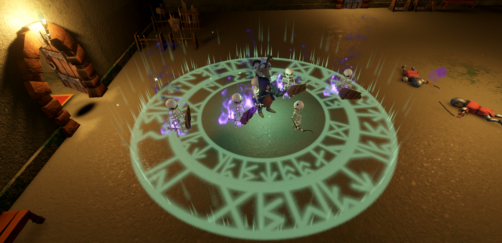
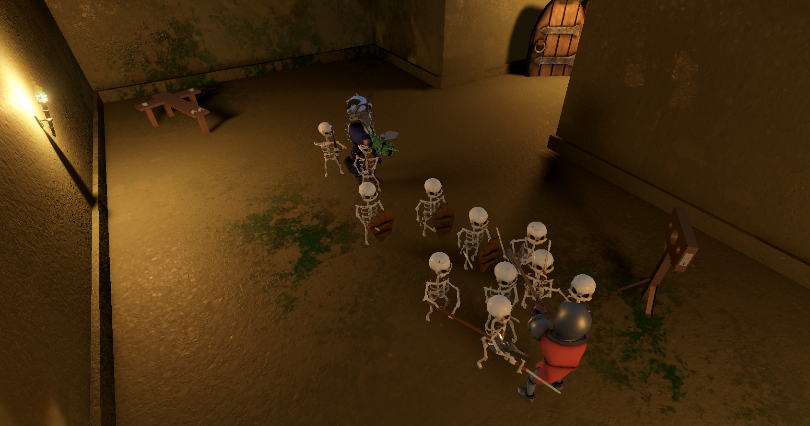
- Arquitectura FSM: Diseño e implementación de la Máquina de Estados Modular que gobierna la IA enemiga y aliada.
- Sistemas de Formaciones: Motor de desplazamiento en grupo con mantenimiento de posición en tiempo real (NavMesh) y panel de edición de formación dinámico.
- Combate Táctico y Asignación: Algoritmo y de detección, selección de objetivos distribución de slots de ataque adaptados al tipo de arma (Melee/Ranged).
- Mecánica de Invocación: Sistema de spawneo e integración de unidades aliadas a la formación del ejército.
Wazungus Invasión
Shooter en tercera persona de supervivencia por oleadas
📸 Capturas


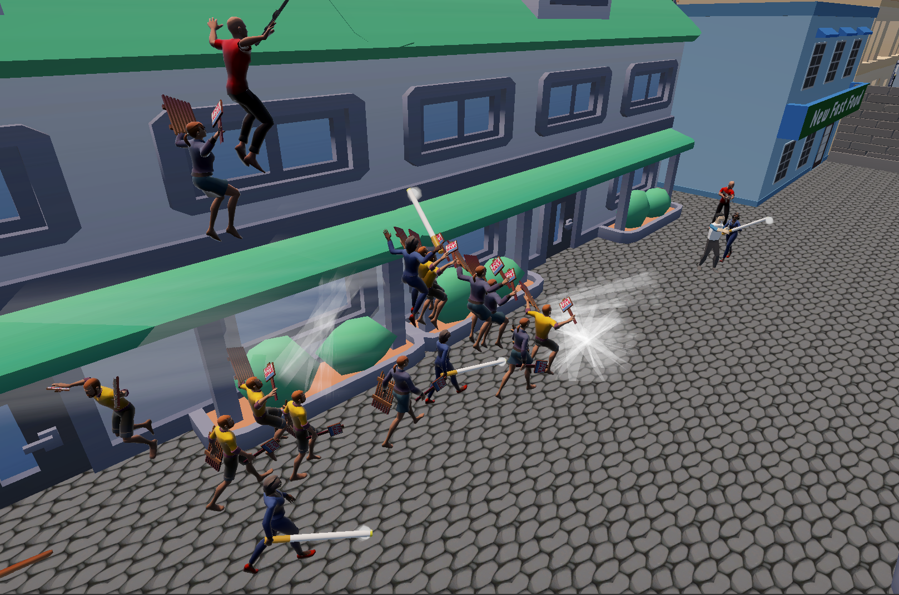
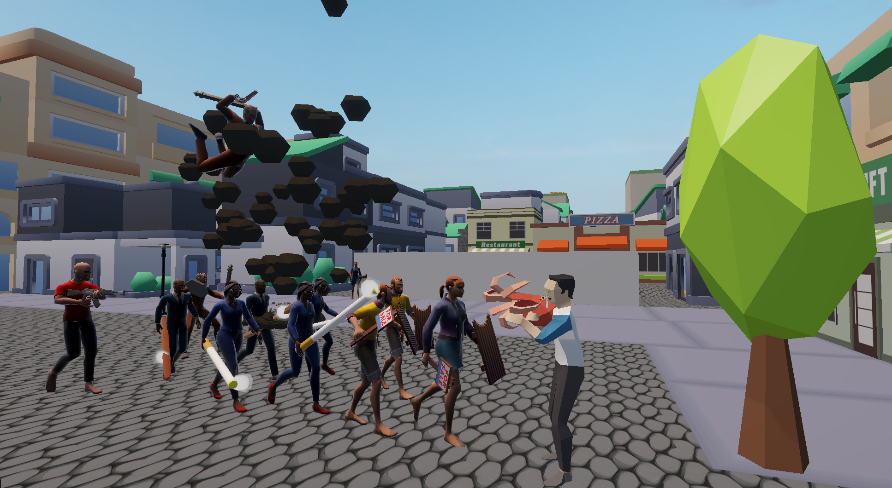
- Arquitectura de Rendimiento (Object Pooling): Implementación de un sistema de Pool System centralizado para la gestión óptima de memoria en enemigos, proyectiles y loot, garantizando un framerate estable.
- Sistema de Oleadas & Spawn Dinámico: Motor de progresión por hordas con control de dificultad escalable y gestión de spawners distribuidos.
- Diseño de Niveles (Tarifa Old Town): Reconstrucción del casco antiguo de Tarifa adaptado a mecánicas de combate, rutas de flanqueo y chokepoints.
- Mecánicas de Combate & UI: Disparo modular con comportamiento por tipo, habilidad de de proyectil y ataque especial.
- Arte y Sonido: Assets de uso libre.
The Elusive Knight
 Solo Developer (100%)
Solo Developer (100%)
Plataformas 2D y Endless Runner para Android
📸 Capturas
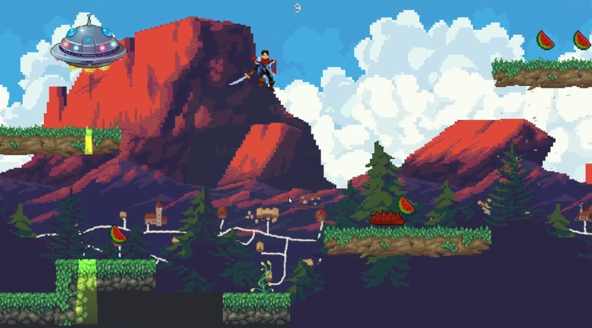
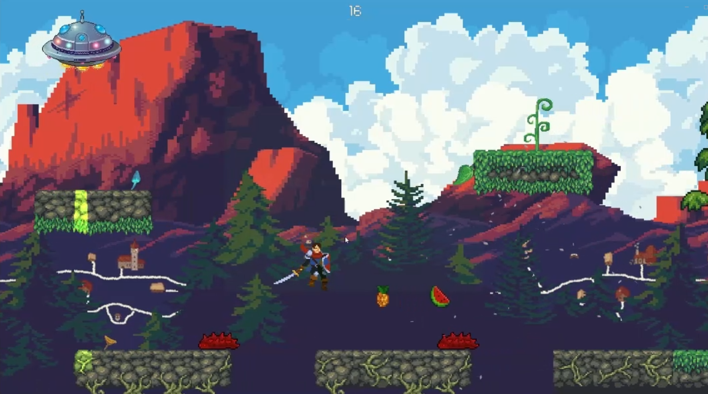
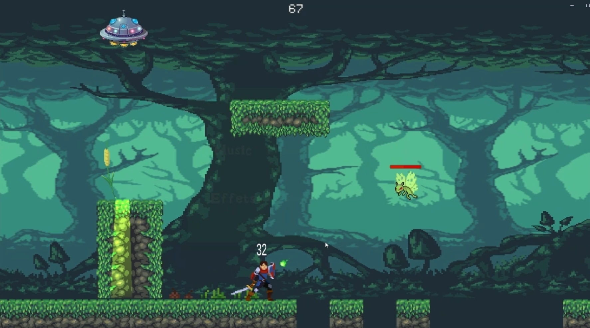
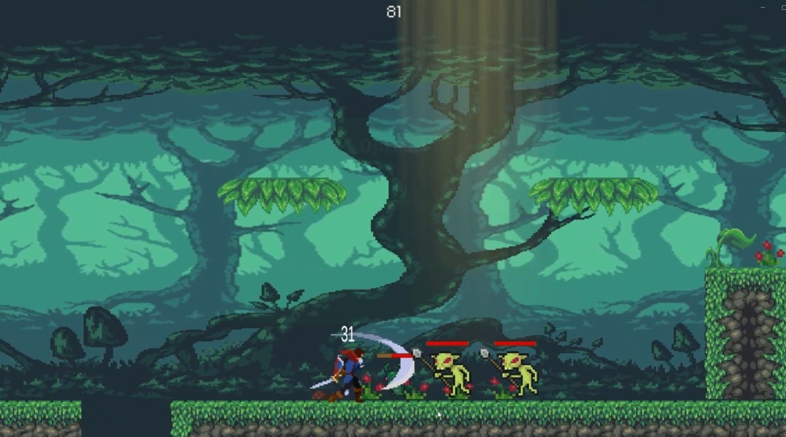
- Moveset Dinámico del Jugador: Cambia sus mecánicas, física y conjunto de habilidades según si está en zona de plataformas o en fase Endless Runner.
- Generación Procedural Grid: Sistema de generación aleatoria e instanciación dinámica de tramos de mapa mediante Grid.
- Power-Ups & Enemigos Regionales: Coleccionables con efectos temporales y variedad de enemigos con comportamientos únicos.
- Parallax Scroll Adaptativo: Motor de paralaje multicapa en 2D y sistema de intercambio de fondos.
Fusionable Planet
Solo Developer (100%)
Estilo Suika para Android
📸 Capturas
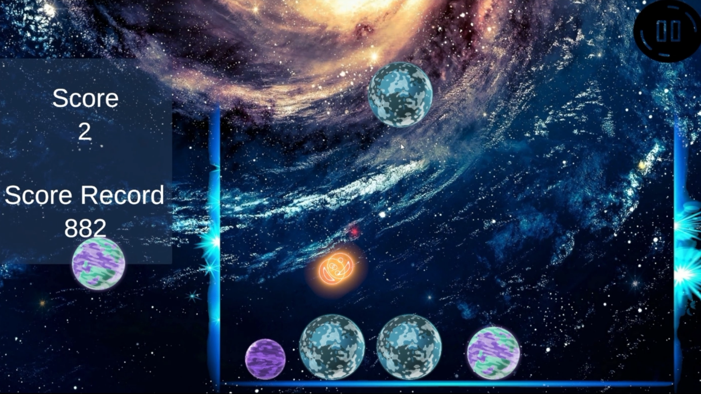
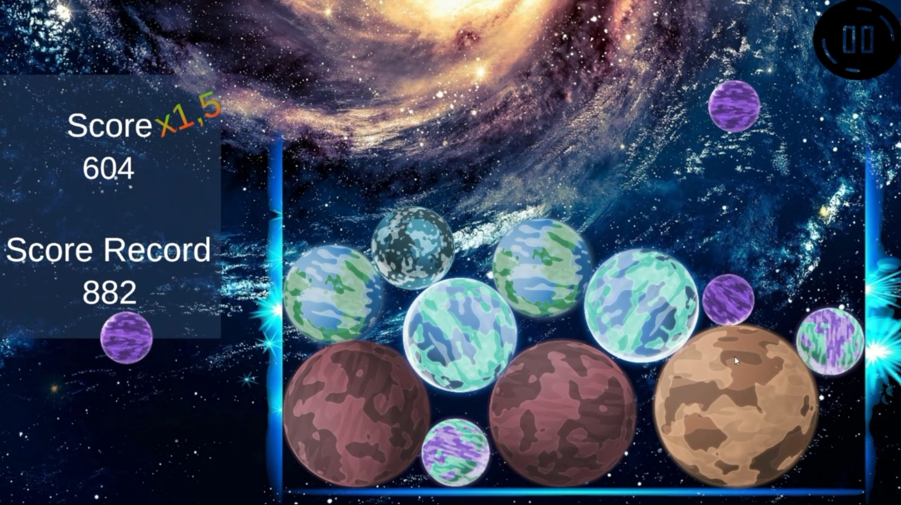
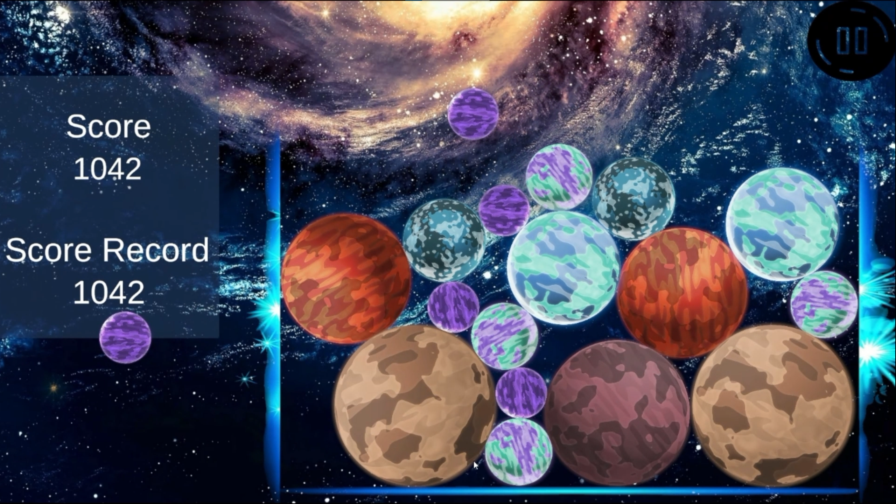
- Sistema de Físicas y Fusión de Entidades: Implementación de algoritmos de colisión en 2D para detectar el tipo de elemento, calcular la posición media del impacto y generar la entidad del siguiente nivel.
- Sistema de Combos y Feedback Visual: Programación de un sistema de puntuación dinámico con temporizadores de combo y efectos de partículas.
- Manejo Dinámico de Inputs y Proyección 2D: Control del jugador mediante el New Input System y traduciendo la posición del ratón/touch al espacio del mundo con límites adaptativos.